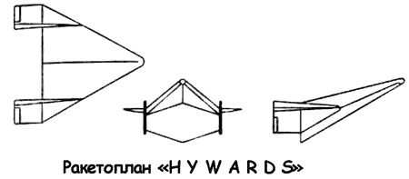

Программа «HYWARDS»
В поддержку проектов «РоБо» и «Брасс Белл» ВВС инициализировали программу исследований, названную «Программа изучения гиперзвукового оружия» — «Хьювардс» («HYWARDS»).
Решаемые в ее рамках задачи были впервые сформулированы в требованиях к перспективному самолету «SR-131», выпущенных в ноябре 1956 года. Впоследствии программа «Хьювардс» получила непосредственное воплощение в проекте «Система 455Л» («455L»). Основным назначением программы было получение научно-исследовательских данных по аэродинамике и техническим проблемам, связанным с высокоскоростным (до 15 Махов) полетом в атмосфере и планирующим возвращением из космоса. Аппарат «Хьювардс» также должен был служить в качестве летающей лаборатории при разработке систем, которые будут использованы в конструкции будущих ракетопланов.

Для аппарата «Хьювардс» были отобраны четыре двигателя: первый, конструкции фирмы «Белл», работал на экзотическим топливе фтор-аммиак, развивая тягу 16000 килограммов; второй, тягой 25175 килограммов, был взят от баллистической ракеты «Атлас»; третий, тягой 27216 килограммов, был взят от баллистической ракеты «Титан»; четвертый двигатель «XLR-99», развивающий тягу 25 855 килограммов, использовался на орбитальном самолете «Х-15».
Ожидалось, что один из этих двигателей сможет разогнать «Хьювардс» до скорости 3,7 км/с и поднять на высоту 110 километров.
На первом этапе испытаний экспериментальный аппарат должен был стартовать с воздушного носителя; для более поздних опытов предполагался вертикальный старт с использованием модифицированной баллистической ракеты.
Две научные группы НАКА, одна в Исследовательском центре имени Лэнгли (Хэмптон, штат Вирджиния) и другая в Исследовательском центре имени Эймса (Моффетфилд. штат Калифорния), проводили изучение возможных конфигураций аппарата «Хьювардс». Группу в Лэнгли возглавлял Джон Бекер, который отвечал за аэродинамику экспериментального самолета «Х-15». Последний отчет Лэнгли, выпущенный 17 января 1957 года, содержал описание такой конструкции «Хьювардс», которая позволила бы выйти на проектную скорость в 18 Махов!
Расчетный анализ нагрева этой конструкции при ее подъеме на орбитальную высоту показал, что оптимальным является вариант планера, имеющий вынесенный вперед фюзеляж с плоским «днищем» и дельтовидное крыло. При этой форме удалось минимизировать потребное количество теплозащиты вне зависимости от ее типа. Эта конфигурация значительно отличалась от ранних проектов фирмы «Белл», в которых использовалось более традиционное среднее расположение крыла, что, разумеется, сказалось на дальнейших разработках компании.
Исследовательская группа из Аэронавигационной лаборатории центра имени Эймса разработала свой вариант аппарата «Хьювардс», являвшегося по сути модификацией созданной здесь ранее модели скоростного планера под скорость 10 Махов. Однако дальность полета этого аппарата была ниже, чем у ракетоплана центра Лэнгли: 3200 против 5100 километров. Чтобы достигнуть высокого аэродинамического качества, сотрудники лаборатории Эймса использовали преимущества подъемной силы, создаваемой за счет интерференции, когда область давления от фюзеляжа распространяется на крыло. К сожалению, при этом весь фюзеляж располагался в области «горячего потока» и требовал дополнительного охлаждения.
Итоги исследовательских программ «РоБо» и «Хьювардс» были подведены в июне 1957 года. На основе полученных данных, результатов расчетов и эскизных проектов командование военно-воздушных сил констатировало, что концепция ракетоплана вполне жизнеспособна и такие летательные аппараты могут быть использованы в качестве системы оружия.
Оставалось еще много нерешенных проблем в части двигательных установок (к тому времени еще не имелось надежных мощных носителей); не была разработана подходящая система жизнеобеспечения пилота. Однако высказывалась надежда, что прототип военного ракетоплана может совершить первый полет в 1965 году, а полностью готовая система типа «РоБо» могла бы появиться к 1974 году.
Интересно, что в марте 1960 года конструкторы фирмы «Белл» вновь вернулись к проекту гиперзвуковой пассажирской транспортной системы, основанной на работах Дорнбергера и Эрике. Ожидалось, что система могла быть введена в действие в середине 1980-х годов. Теперь ее первая ступень представляла собой не крылатую ракету, а обычный самолет с дельтовидным крылом, оснащенный шестью мощными воздушно-реактивными двигателями. Эти двигатели должны были функционировать в трех режимах: как обычный турбореактивный двигатель (до высоты 15,25 километра), как комбинированный турбопрямоточный двигатель и, в конечном счете, как чисто прямоточный двигатель (на высоте 36,6 километра при скорости 5,2 Маха). При достижении максимально возможной высоты и скорости запускался двигатель второй ступени. Она представляла собой суборбитальный воздушно-космический аппарат, который разгонялся по рельсовым направляющим, проложенным в верхней части первой ступени. При этом воздушно-космический аппарат имел бы максимальную высоту полета 64 километра и скорость примерно 6,7 км/с. Вспомогательные турбореактивные двигатели позволяли маневрировать перед посадкой, которая могла быть выполнена в любом аэропорту. При всей привлекательности проекта он «умер» прежде, чем началась какая-либо серьезная конструкторская работа.